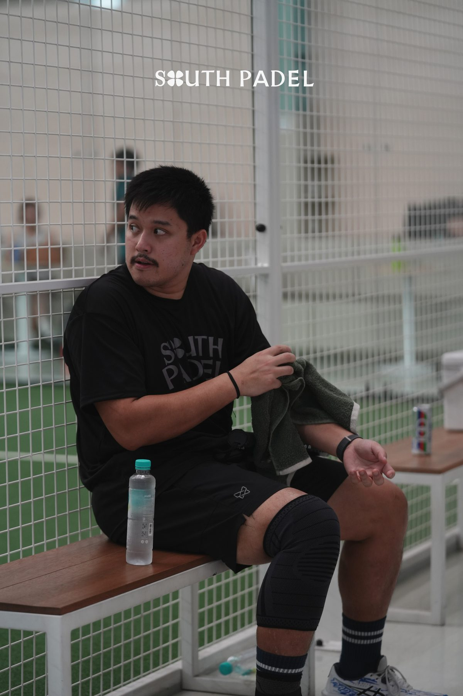
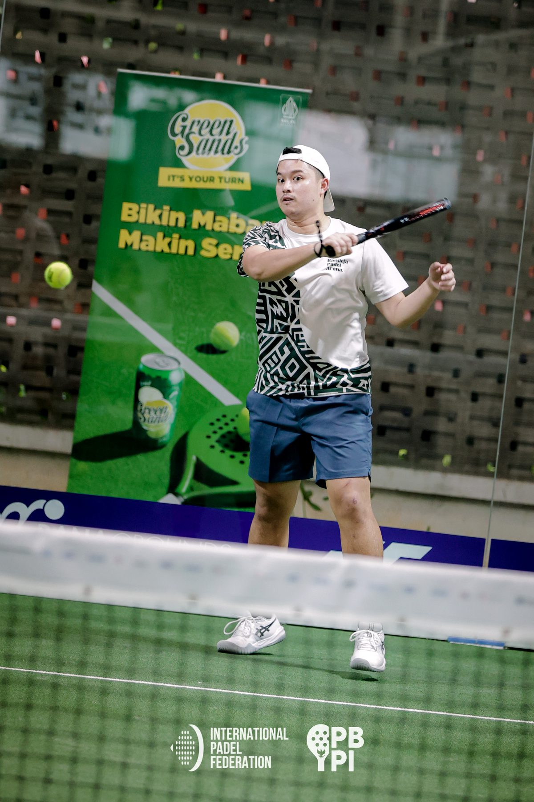
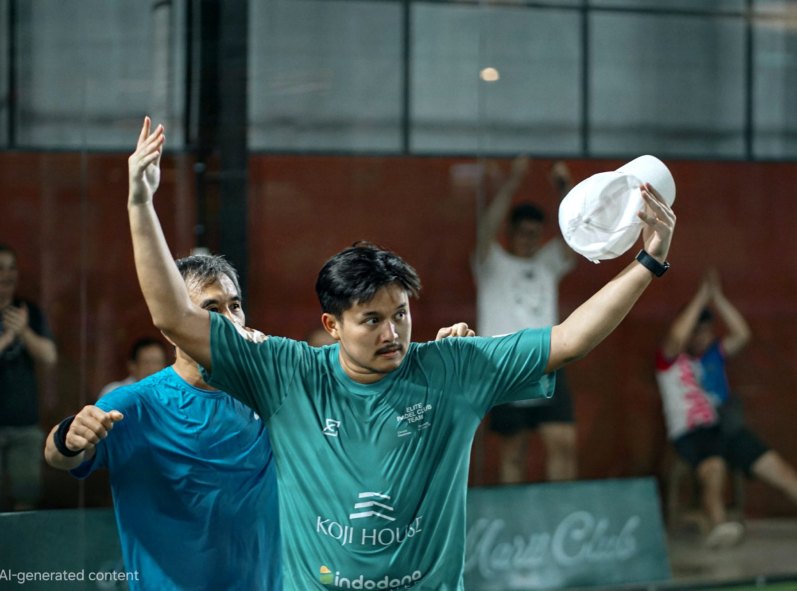
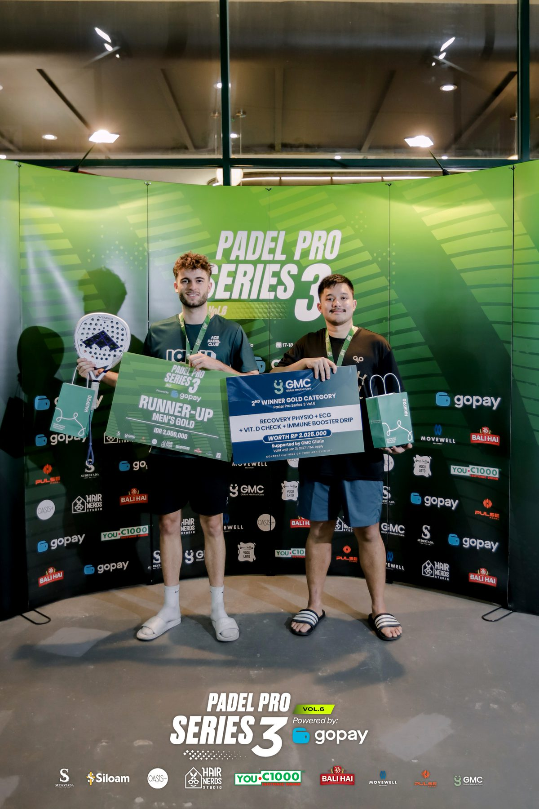
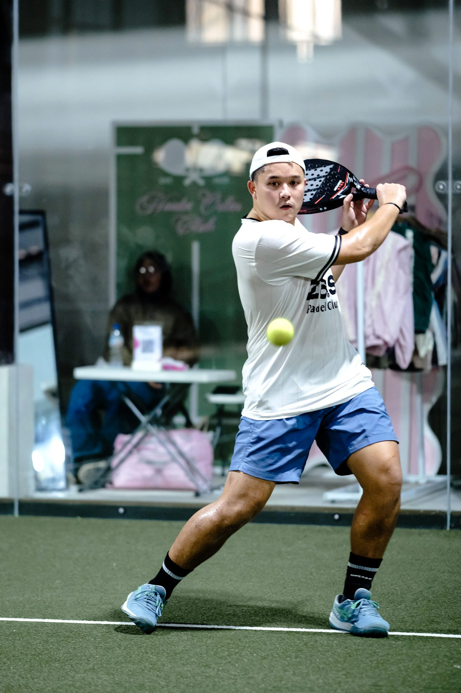

The foundation
Before padel there was tennis: almost two decades of it. Everything I do on a padel court started there.
In November 2025 I made it formal with the ITF PTC and ITF CBI (Level 1) certifications, with Coach Martin Setiawan (ITF Level 3 Certified) and other tutors.

Seattle years
Three years of pickleball in Seattle, Washington, up to DUPR 5.0+. Golf alongside it: from beginner to a 13 handicap within a year.
I practised with Arccos and Trackman or Toptracer data, then played by feel. That is still how I learn: a meticulous system, quick adjustments, and my best when the pressure is on.

Falling for padel
I first hit a padel ball in August 2025, then played fewer than ten hours over the next six months. Then on 14 February 2026 the game clicked, and I have been hooked ever since.
I went straight to learning it properly: a three-day training at PadelMBA in March, my FIP L0 certification in April, and more than four months and 50 hours of group lessons at South Padel Academy.
The work showed off the court too: I lost about 15 kg between the end of 2025 and November 2026.

First title
Marii M1, Silver Open, in Purwokerto. Two months after padel became my game, I won my first title with my dad as my partner.
The climb
Bronze in April. Silver a week later. Gold by September. 23 tournaments with 19 different partners across four cities, including my first FIP event in July.
By autumn the Silver podium had become routine: three semifinals on three straight weekends.

Gold final
Padel Pro Series 3.6, Men's Gold, with Jaime de las Heras. We finished runner-up, eight months after I started playing seriously.

Road to Pro
My first year was about putting myself on the map. 2027 is about going after pro-level padel: tougher categories, a full calendar, and the same habit of learning from every match.